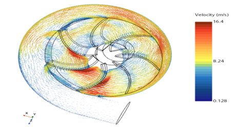
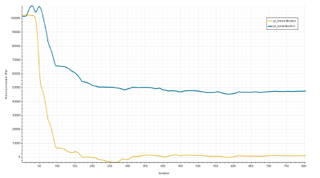
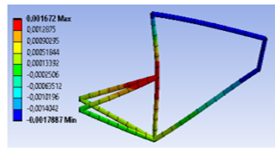
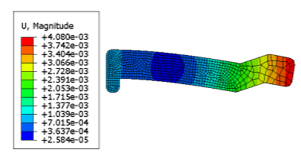

Mécanique des fluides
Evaluation de débits de dose gamma dans une centrale nucléaire

Dispersion d'un polluant en champ libre


Champ acoustique rayonné en aval d'un cylindre
Influence d'une volute sur le rendement d'une roue


Mécanique des solides
Optimisation d'un cadre de vélo


Tube de direction composite

